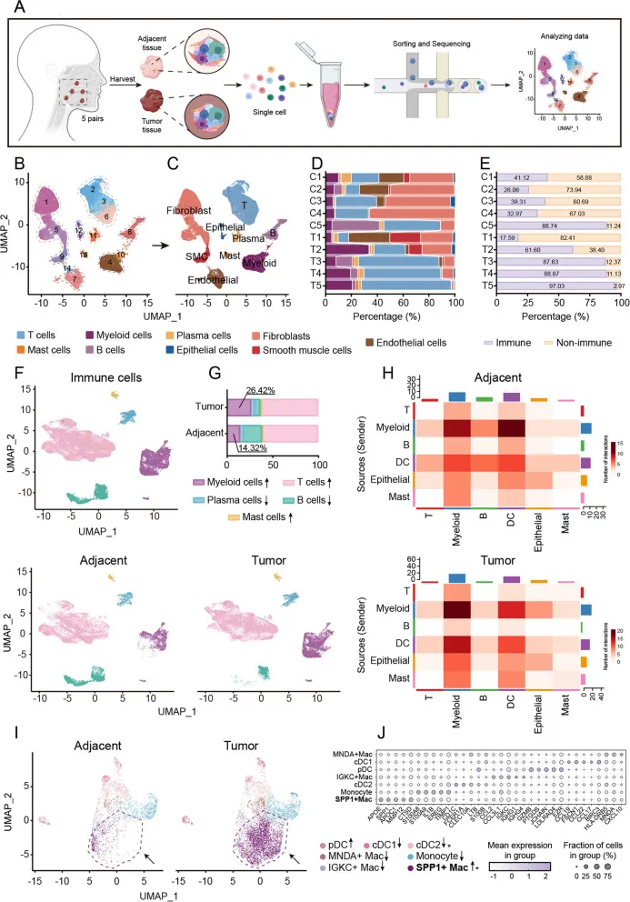
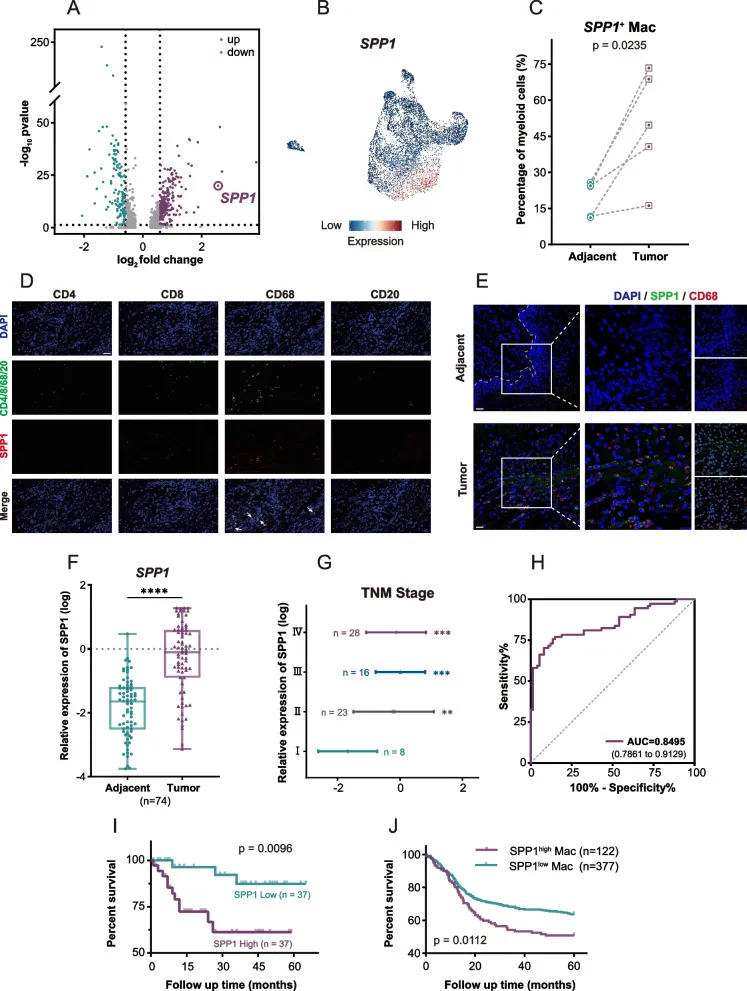
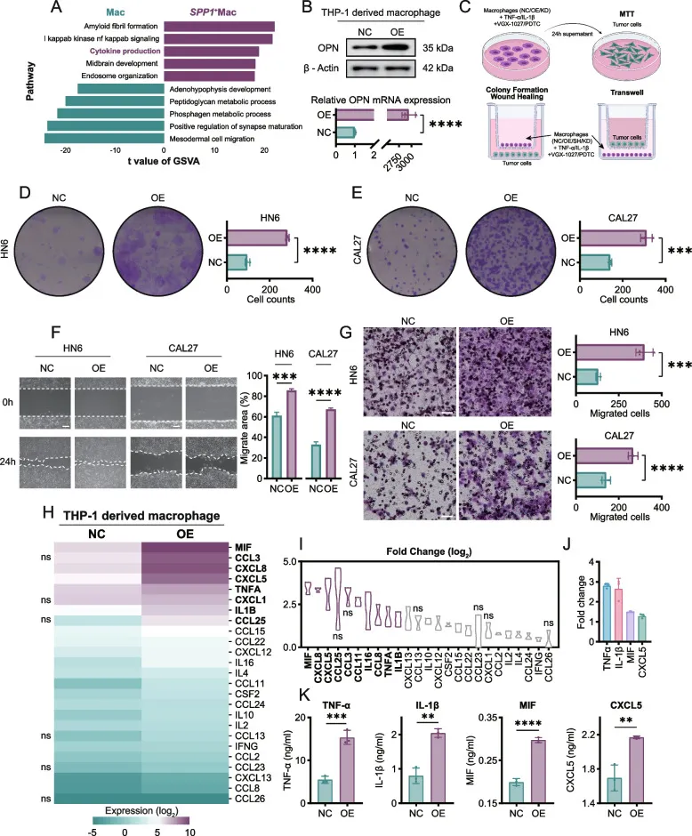
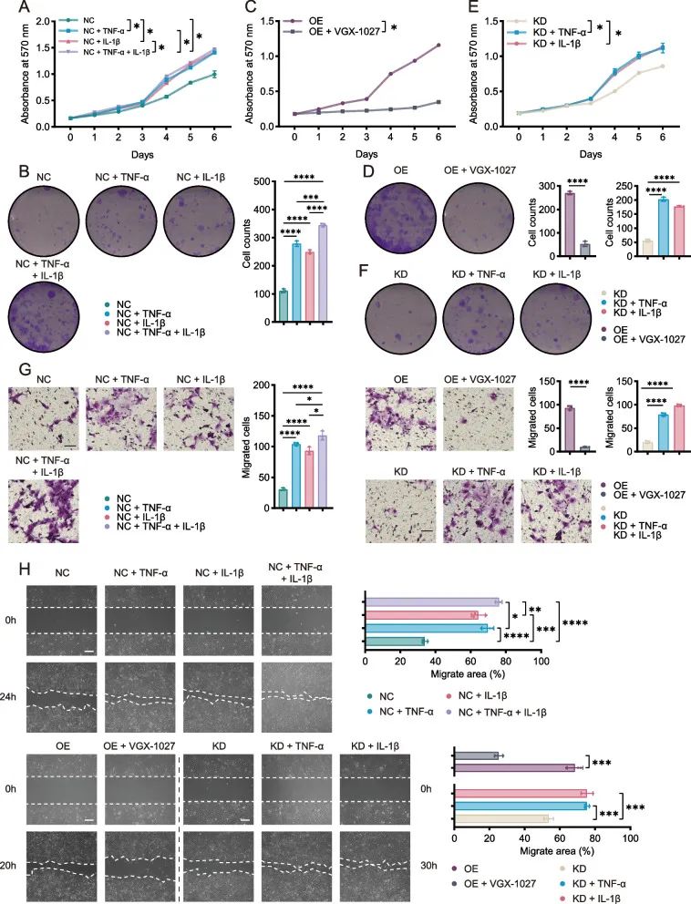
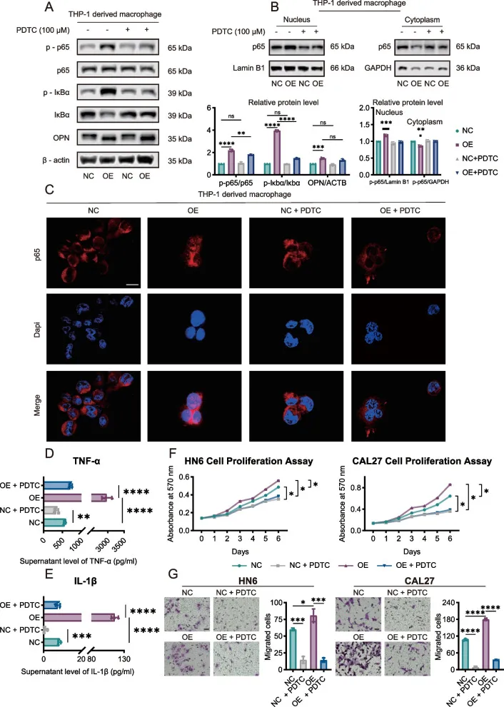
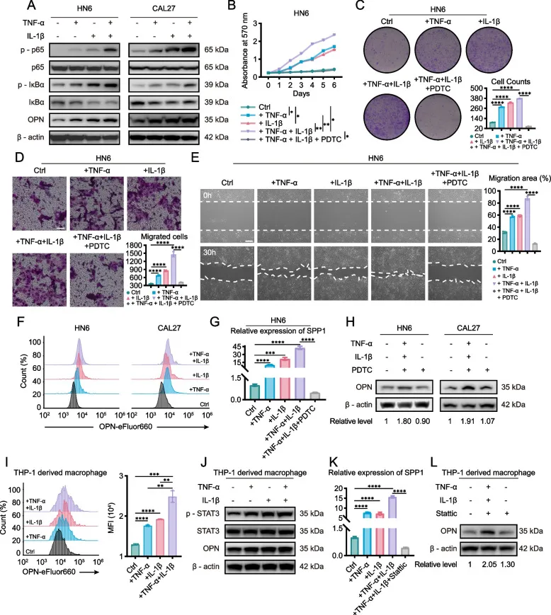
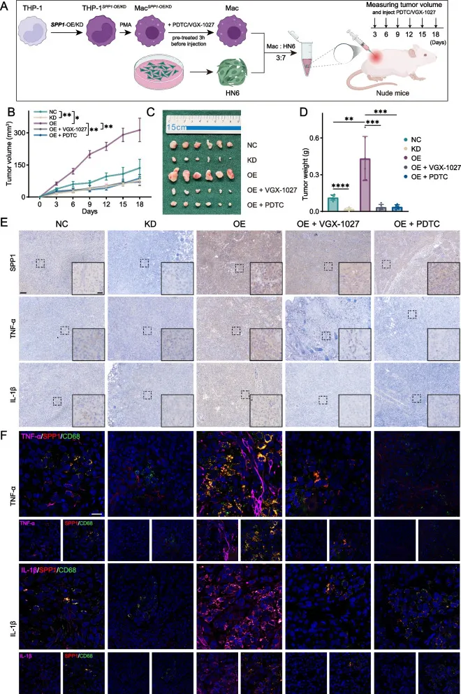
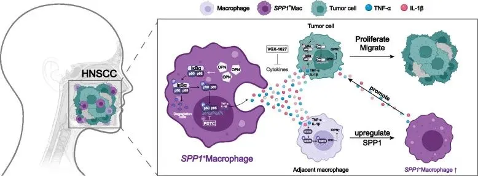

SPP1+巨噬细胞通过分泌TNF-α和IL-1β促进头颈部鳞状细胞癌进展
原文：https://mp.weixin.qq.com/s?__biz=MzAwMzIzOTk5OQ==&mid=2247532107&idx=1&sn=9bc143d8c0edd8ddd72d0caf9396b86d&chksm=9b3c071bac4b8e0de309beb1a69c4d3a0700fffe46d51f070b9818d0a2e8f4ed31648b4eb1d6#rd 合集：文献速递
一、写在前面
本次分享的是2024年发布于《J Exp Clin Cancer Res.》的文章（IF：12.8）“SPP1+ macrophages promote head and neck squamous cell carcinoma progression by secreting TNF-α and IL-1β” DOI: 10.1186/s13046-024-03255-w 链接：https://pmc.ncbi.nlm.nih.gov/articles/PMC11670405/
头颈部鳞状细胞癌 （HNSCC） 是一种非常具有侵袭性的疾病，其特征是异质性肿瘤免疫微环境 （TIME）。肿瘤相关巨噬细胞 （TAM） 构成了 TIME 中主要的先天免疫群体，它们促进参与恶性肿瘤进展的关键调节过程。SPP1 + 巨噬细胞 （SPP1 + Macs） 存在于许多癌症中，但它们对 HNSCC 的影响仍然未知。本研究旨在识别和验证 SPP1 + Macs在 HNSCC 恶性进展中的作用和功能。
在这项研究中，作者团队 两分干、八分湿，通过对 5 名 HNSCC 患者的配对肿瘤和正常组织进行了单细胞 RNA 测序 （scRNA-seq）联合TCGA 分析，以鉴定肿瘤特异性 SPP1 + Mac。采用RT-qPCR和多重免疫组化和多重免疫荧光染色验证临床样本中是否存在SPP1 + Macs。基因集变异分析表明，SPP1 + Macs积极参与细胞因子的产生。因此，我们构建了SPP1-OE巨噬细胞和SPP1-KD巨噬细胞（均从THP-1细胞中分化而来），进行Luminex液体悬浮芯片检测测定以检测差异细胞因子，并进一步评估了它们在几种HNSCC细胞系和邻近巨噬细胞中的生物学功能和机制。采用体内实验验证SPP1+Macs在HNSCC进展中的功能。scRNA-seq结果显示，骨髓细胞在HNSCC中具有异质性，与TIME中的肿瘤细胞呈强相关，并鉴定出肿瘤特异性SPP1+Macs，与HNSCC患者预后不良呈正相关。基因集变异分析（GSVA）提示SPP1+Macs积极参与细胞因子的产生。Luminex液体悬浮芯片检测试验表明，SPP1+Mac衍生的TNF-α和IL-1β起重要作用。体外和体内实验以及巨噬细胞衍生TNF-α和IL-1β抑制剂VGX-1027的使用证实，SPP1+Mac衍生的TNF-α和IL-1β通过支持肿瘤细胞增殖和迁移来促进HNSCC进展。结合巨噬细胞体外培养、慢病毒载体导入、qRT-PCR、蛋白质印迹分析、免疫组化IHC、多重免疫荧光、多重免疫组织化学染色、免疫细胞化学、ELISA、traswell、流式细胞术等实验，作者发现 SPP1 + Mac 中 NF-kappa B 信号通路激活导致 TNF-α 和 IL-1β 上调。此外，SPP1 + Mac 衍生的 TNF-α 和 IL-1β 通过不同的信号通路促进肿瘤细胞和其他邻近巨噬细胞中 OPN 的表达。SPP1 + Macs通过NF-kappa B通路增加TNF-α和IL-1β的分泌，促进HNSCC细胞增殖，TNF-α和IL-1β进而上调OPN在肿瘤细胞和巨噬细胞中的表达;因此，SPP1 + Macs可能是增强抗肿瘤疗效的候选靶点。本文相关的单细胞分析教程可见：这可能是全网最全的scRNA-seq分析教程！
如果需要数据分析指导 、生信热点全文复现 、自测/数据库数据个性化分析 辅导、常态化实验学习，欢迎联系客服微信[Biomamba_zhushou]
二、背景介绍
头颈部鳞状细胞癌（head and neck squamous cell carcinoma， HNSCC）每年约有90万例新发病例，每年导致约50万例死亡，是全球最常见的癌症之一。 尽管各种治疗方式（包括手术切除、辅助放疗、化疗和免疫治疗）取得了进步，但 HNSCC 患者的总生存率约为 50%（算是标准开场白，介绍疾病基本情况）。 巨噬细胞是肿瘤免疫微环境（TIME）的关键组成部分，它们具有多种功能，与预后密切相关，并在不同癌症类型中表现出亚群异质性。巨噬细胞传统上被归类为 M1 样或 M2 样巨噬细胞。然而，最近的研究表明，在几乎所有癌症中，M1 和 M2 基因特征都可以在同一巨噬细胞亚群中识别出来（巨噬细胞分M1、M2是公认的过时）。此外，最近一项针对HNSCC的研究表明，与传统的M1和M2亚型相比，CXCL9-SPP1可能是定义极性和预后更好的分类系统。越来越多的研究表明，肿瘤相关巨噬细胞 （TAM） 有助于癌症的免疫抑制特性;例如，干扰素引发的TAM、免疫调节TAM和富含炎症细胞因子的TAM（Inflam-TAM）已被证明可以招募和调节免疫细胞以抑制免疫反应并驱动肿瘤进展。 分泌磷蛋白1（SPP1）由SPP1基因编码，也称为骨桥蛋白（OPN），已被证明可以缓解纤维化，并与多种癌症的恶性肿瘤和化疗耐药呈正相关。最近的研究表明，SPP1 + 巨噬细胞 （SPP1 + Macs） 构成了各种癌症类型中常见的 TAM 簇，并且 SPP1 是 Inflam-TAM 和促血管生成 TAM （ANGIO-TAM） 的标志物。在结直肠癌（CRC）和胃癌中，促进炎症细胞因子产生的Inflam-TAMs可能会在炎症期间招募免疫细胞，包括单核细胞和淋巴细胞。血管-TAM促进肿瘤细胞上皮间质转化（EMT）和血管生成，并通过NF-kappa B信号传导、Notch信号或VEGF信号通路介导的机制与许多肿瘤类型中的不良预后相关，包括乳腺癌、CRC、胃癌、肝细胞癌（HCC）、非小细胞肺癌和胰腺导管腺癌（PDAC）。然而，SPP1 + Mac 在 HNSCC 中的机制和功能仍不清楚。
三、主要结果
1、通过scRNA-seq在HNSCC临床样本中鉴定肿瘤特异性SPP1 + Macs作者收集了5对相邻的正常组织和肿瘤组织进行scRNA-seq分析（Fig.1A）。 经过质量控制和双细胞过滤后，保留 71,539 个细胞（邻近正常组织的 39,202 个、肿瘤组织的 32,337 个）。细胞的14个簇共分为9种主要细胞类型（Fig. 1B,C）：上皮细胞（ n = 855），成纤维细胞（ n = 21,769），平滑肌细胞（ n = 2918），内皮细胞（ n = 5413），肥大细胞（ n = 715），髓系细胞（ n = 8540），浆细胞（ n = 1768）和T细胞（ n = 24,784）然而，每种细胞类型的浸润程度不同，这可能反映了HNSCC阶段的差异（Fig. 1D）。为了进一步探索HNSCC的TIME，作者比较了相邻正常组织和肿瘤组织之间免疫细胞和非免疫细胞的比例，并将免疫细胞分为五个亚群：B细胞（ MS4A1 和 BANK1 ）、肥大细胞（ TPSAB1 和 CPA3 ）、浆细胞（ JCHAIN 和 TNFRSF17 ）、髓系细胞（ FPR3 和 MS4A4A ）和T细胞（ CD3D 和 CD3E ）（Fig.1 E,F）。

Fig.1 比较每个患者的相邻正常组织和肿瘤组织，肿瘤组织中的髓系细胞、T细胞和肥大细胞上调。骨髓细胞约占所有相邻正常组织免疫细胞的14.32%，但它们在患者肿瘤组织中平均占免疫细胞的26.42%（Fig.1G)。与骨髓细胞相比，T细胞的百分比几乎没有增加，而肥大细胞的百分比过低。肿瘤组织中髓系细胞的增加表明这些细胞可能与 HNSCC 的肿瘤进展有关。然后使用 CellChat 探索免疫细胞和上皮细胞之间的通讯。与邻近正常组织中的相互作用相比，肿瘤组织中髓系细胞和上皮细胞之间的相互作用存在显着差异（Fig.1 H)。作者将髓系细胞分为七个亚簇，其中cDC1s、cDC2s、pDCs和单核细胞分别以 BIRC3 、 CD1C 、 GZMB 和 S100A8 的高表达为特征。还鉴定了巨噬细胞的三个不同亚群——SPP1+ Mac、MNDA+ Mac和IGKC+ Mac（Fig.1I,J）。有趣的是，MNDA+巨噬细胞和IGKC+巨噬细胞在相邻的正常样本中都富集，而SPP1+ Macs在几乎所有肿瘤样本中都增加（Fig.1I）. 这些结果表明，SPP1+ Mac 可能在 HNSCC 的恶性进展中发挥不同的功能。 2、肿瘤特异性 SPP1 + Mac 与 HNSCC 预后不良呈正相关由于 SPP1+ Mac 几乎普遍存在于肿瘤组织中，作者接下来研究了 SPP1 在髓系细胞中的表达。火山图和UMAP图显示，SPP1在髓系细胞中显著上调，在巨噬细胞中高表达（Fig.2 A,B）。此外，SPP1+ Macs占肿瘤组织中髓系细胞总数的49.77%，但仅占邻近正常组织中髓系细胞总数的19.52%（Fig.2 C)MIHC染色显示，SPP1与CD68+细胞基本共定位，但与CD4+ T细胞、CD8+ T细胞或B细胞几乎共定位，与来自邻近正常组织的巨噬细胞相比，SPP1在源自HNSCC肿瘤组织的巨噬细胞中表达更高（Fig.2 D,E）。采用实时荧光定量PCR法检测74对HNSCC组织样本和邻近正常口腔上皮组织样本中SPP1的表达水平。SPP1在HNSCC肿瘤样本中的表达显著高于正常口腔上皮组织样本（Fig.2 F）。TCGA数据挖掘显示，SPP1在HNSCC中高表达。进一步分析表明，SPP1表达与TNM分期呈正相关（Fig.1G）。，SPP1的曲线下面积（AUC）为0.8495（95%CI，0.7861–0.9129），这表明SPP1可能是HNSCC的生物标志物。SPP1 表达较高的患者表现出较低的生存率。TCGA数据的生存分析分析显示了一致的结果，这表明SPP1+ Macs与不良结果相关，并且SPP1表达水平与HNSCC患者的癌症分期和肿瘤分级呈正相关（Fig.2 I,J）。其实这里还可以补一个分析：肿瘤异质性分析必备| 一文学会四种scRNA-seq拷贝数变异分析
Fig.2 3、SPP1 + Mac 通过分泌细胞因子促进 HNSCC 进展为了评估SPP1+ Macs对HNSCC的生物学效应，作者将巨噬细胞分为两个亚群，SPP1+ Macs和所有其他巨噬细胞，并基于scRNA-seq数据进行GSVA分析。结果表明，与巨噬细胞相比，SPP1+ Macs积极参与细胞因子的产生（Fig.3A）。作者初步假设 SPP1+ Mac 通过细胞因子分泌促进 HNSCC 进展。进而，作者利用慢病毒转导在THP-1细胞中过表达或敲低SPP1。PMA处理诱导THP-1细胞分化为巨噬细胞48 h后，分别通过蛋白质印迹法和实时荧光定量PCR法测定THP-1细胞来源巨噬细胞中SPP1的蛋白和mRNA水平（Fig. 3B）。研究SPP1 + Macs对HNSCC细胞、SPP1阴性对照（SPP1-NC;SPP1-NC THP-1细胞来源的巨噬细胞）组和SPP1过表达（SPP1-OE;收集SPP1-OE THP-1细胞来源的巨噬细胞）组，用HN6和CAL27细胞进一步间接培养，同时使用另一种共培养模型探索直接影响（Fig.3C）。与SPP1-NC相比，SPP1-OE在直接和间接培养体系中均促进了HN6和CAL27细胞的增殖，而直接共培养体系则强烈加速了HNSCC细胞的生长（Fig.3 D,E）。为证明SPP1可以促进肿瘤细胞迁移，作者进行了伤口愈合和Transwell迁移测定，以探讨SPP1 + Macs是否对HNSCC肿瘤细胞发挥类似的作用。值得注意的是，SPP1-OE强烈促进了HN6和CAL27细胞的迁移（Fig.3 F, G）。此外，SPP1短发夹RNA阴性对照（SPP1-Sh-NC;SPP1-Sh-NC THP-1细胞来源的巨噬细胞）和SPP1敲低（SPP1-KD;SPP1-KD THP-1细胞来源的巨噬细胞）细胞也与HN6和CAL27细胞共培养。与SPP1-Sh-NC相比，与SPP1-KD共培养降低了这些细胞的增殖和迁移能力。为进一步探究SPP1+Macs释放作用于HNSCC细胞的候选细胞因子的机制，采用Luminex液悬芯片检测比较SPP1-NC和SPP1-OE组40种常见趋化和炎性细胞因子的表达。与SPP1-NC组相比，MIF、CXCL8、CXCL5、TNF-α和IL-1β是SPP1-OE组差异表达最高的5种细胞因子（Fig.3 H，I）。然后使用 ELISA 测量 SPP1-NC 和 SPP1-OE 细胞群新鲜上清液中这些细胞因子的浓度。结果表明，MIF、TNF-α和IL-1β是SPP1-OE巨噬细胞中上调最显著、高表达的基因（Fig3 J, K）。需要实验教学的同学可以参考：手把手教你做实验
Fig.3 4、SPP1 + Mac衍生的TNF-α和IL-1β在体外加速HNSCC细胞的增殖和迁移为进一步探讨SPP1+Mac衍生的MIF、TNF-α和IL-1β的作用，将外源rhMIF、rhTNF-α和rhIL-1β分别加入SPP1-NC巨噬细胞上清液中，与HN6和CAL27细胞间接培养，并将结果与SPP1-NC巨噬细胞未经处理的上清液共培养的结果进行比较。rhTNF-α和rhIL-1β，而不是rhMIF，促进HNSCC细胞增殖。这些数据表明，TNF-α和IL-1β可能在SPP1 + Mac衍生的细胞因子对HNSCC细胞的影响中发挥重要作用。作者还检测了 SPP1-NC、SPP1-OE、SPP1-Sh-NC 和 SPP1-KD 中 TNF-α 和 IL-1β 的蛋白和 mRNA 表达。结果表明，这些巨噬细胞中TNF-α和IL-1β的内源性表达也发生了变化。为研究SPP1+Mac衍生的TNF-α和IL-1β是否促进HNSCC细胞增殖，采用添加TNF-α和IL-1β的巨噬细胞上清液或VGX-1027处理肿瘤细胞，该上清液靶向巨噬细胞，减少TNF-α和IL-1β的产生，以模拟和比较巨噬细胞对肿瘤细胞的影响。MTT测定和共培养集落形成测定显示，与SPP1-NC细胞组相比，SPP1-NC+rhTNF-α、SPP1-NC+rhIL-1β和SPP1-NC+rhTNF-α+rhIL-1β细胞群诱导HN6和CAL27细胞增殖显着增加（Fig.4 B）。然后将VGX-1027加入SPP1-NC和SPP1-OE组的上清液中，阻断TNF-α和IL-1β的作用，发现SPP1-OE组增殖率显著下降，SPP1-NC组增殖率略有下降（Fig.4、C,D）。结果表明，抑制巨噬细胞来源的TNF-α和IL-1β可减少肿瘤细胞的生长，SPP1-NC也表现出TNF-α和IL-1β的分泌。同样，当与SPP1-KD细胞培养时，rhTNF-α和rhIL-1β促进HNSCC细胞生长（Fig.4E,F），表明SPP1 + Macs中TNF-α和IL-1β的功能与SPP1不同。由于SPP1 + Mac衍生的TNF-α和IL-1β在HNSCC进展中起重要作用，作者试图确定这些细胞因子是否参与HN6和CAL27细胞迁移。伤口愈合和Transwell迁移测定显示，SPP1-NC + rhTNF-α、SPP1-NC + rhIL-1β、SPP1 + rhTNF-α + rhIL-1β、SPP1-KD + rhTNF-α或SPP1-KD + rhIL-1β处理强烈加速了这些细胞的迁移，而VGX-1027处理大大减缓了HNSCC细胞的迁移（Fig4 G,H）。并且，作为阳性和阴性对照，作者还在SPP1-OE上清液中使用抗TNF-α和抗IL-1β来验证VGX-1027和TNF-α和IL-1β在巨噬细胞中的功能。这些结果表明 TNF-α 和 IL-1β 可能在 SPP1 + Mac 在体外促进 HNSCC 细胞增殖和迁移方面发挥重要作用。
Fig.4 5、SPP1 + Macs分泌TNF-α和IL-1β受NF-κB信号通路调控作者接下来研究了它们的分泌机制。OPN（由SPP1编码）与黑色素瘤和肾细胞癌等多种肿瘤中NF-kappa B信号通路的激活有关。 本文scRNA-seq数据的GSVA还显示，SPP1 + Macs与I kappa B/激酶NF-kappa B信号通路相关。因此，我们研究了 NF-kappa B 信号通路是否影响 SPP1 + Macs 分泌 TNF-α 和 IL-1β。 作者用PDTC（选择性NF-κB抑制剂）预处理SPP1-NC和SPP1-OE，以评估SPP1-OE巨噬细胞的作用。与SPP1-NC巨噬细胞相比，SPP1-OE巨噬细胞的p65和IκBα磷酸化增加，IκBα表达降低。PDTC处理减弱了p65和IκBα的磷酸化（Fig.5 A)。我们还从巨噬细胞中分离出核和细胞质部分，以通过蛋白质印迹检测p65易位。p65主要位于SPP1-NC巨噬细胞的细胞质中，而在SPP1-OE巨噬细胞中，p65在细胞核中积累。用PDTC预处理后，p65保留在细胞质中（Fig.5B），共聚焦显微镜的结果也证实了这些结果，并表明NF\u2012kappa B信号通路可能在SPP1 + Macs中被激活（Fig.5C）。随后，ELISA检测PDTC抑制巨噬细胞NF-kappa B信号传导是否降低TNF-α和IL-1β的分泌。PDTC显着减少了SPP1-NC和SPP1-OE巨噬细胞中TNF-α和IL-1β的分泌（Fig.5 D,E）。此外，MTT和Transwell迁移测定表明，用PDTC预处理巨噬细胞在与这些巨噬细胞共培养时抑制了HN6和CAL27细胞的增殖和迁移（Fig.5 F,G）。综上所述，我们的研究结果表明，SPP1 + Macs通过激活NF-kappa B信号通路来增加TNF-α和IL-1β的分泌。
Fig.5 6、SPP1 + Mac衍生的TNF-α和IL-1β促进OPN在巨噬细胞和肿瘤细胞中的表达为进一步探讨SPP1+ Mac细胞分泌的TNF-α和IL-1β如何促进HNSCC的进展，作者将rhTNF-α和rhIL-1β单独或一起添加到HN6和CAL27肿瘤细胞中。先前的研究表明，TNF-α和IL-1β可激活不同细胞类型中的PI3K/Akt、NF-κB、MAPK/Erk和STAT3信号通路。因此，我们检测了哪种信号通路与 TNF-α 和 IL-1β 调节肿瘤细胞的能力相关。蛋白质印迹分析显示，在HN6和CAL27细胞中，NF-κB信号通路分别被TNF-α和IL-1β激活，TNF-α和IL-1β同时被激活（Fig.6A）。此外，PDTC降低了TNF-α和IL-1β诱导的肿瘤细胞增殖和迁移能力的增加（Fig.6 B-E）。有趣的是，作者还观察到，当肿瘤细胞用TNF-α或IL-1β处理时，肿瘤细胞中的OPN表达也增加，而当它们同时用TNF-α和IL-1β处理时，它们显示出双重效应（Fig.6 F-G）。作者进一步使用流式细胞术检测表达，并使用PDTC来抑制该功能（Fig. 6 G,H）。结果表明，TNF-α和IL-1β激活NF-κB信号通路，进而促进OPN在肿瘤细胞中的表达和肿瘤细胞进展。鉴于TNF-α和IL-1β促进肿瘤细胞中OPN的表达，作者想知道TNF-α和IL-1β是否促进OPN在相邻巨噬细胞中的表达。当巨噬细胞单独用 TNF-α 或 IL-1β 或同时用 TNF-α 和 IL-1β 处理时，OPN 表达在蛋白质和 mRNA 水平上调。作者发现 TNF-α 和 IL-1β 激活了巨噬细胞中的 STAT3，但不能激活 NF-κB 信号通路。在具有TNF-α和IL-1β的巨噬细胞中使用阻断STAT3的Stattic会降低OPN表达（Fig6 J-L;补充图S8L-O）。简而言之，SPP1 + Mac衍生的TNF-α和IL-1β促进OPN在巨噬细胞和肿瘤细胞中的表达。
Fig.67、SPP1 + Mac 促进 HNSCC 在体内进展
为了进一步验证SPP1 + Macs对HNSCC体内生长的影响，采用HN6 HNSCC肿瘤细胞和巨噬细胞（从THP-1细胞分化而来）的7：3混合物建立小鼠模型。用VGX-1027或PDTC处理3小时后，将SPP1-NC，SPP1-OE，SPP1-KD，SPP1-OE + VGX-1027或SPP1-OE + PDTC细胞群皮下注射到裸鼠体内（Fig 7A）、为了保持持久的效果，我们每 3 天在肿瘤周围注射一次 VGX-1027 和 PDTC。有趣的是，SPP1-KD、SPP1-OE + VGX-1027 和 SPP1-OE + PDTC 组的肿瘤重量和肿瘤体积显着低于 SPP1-NC 组（Fig 7 B-D）。采集异种移植物肿瘤后，进行IHC染色和mIHC染色，探究OPN、TNF-α和IL-1β的表达水平。两种染色试验结果均表明，SPP1-OE、SPP1-OE+VGX-1027和SPP1-OE+PDTC组OPN表达高于其他组。作者还发现，SPP1-OE+PDTC中的OPN表达低于其他两组，这可能表明PDTC抑制了肿瘤细胞中OPN的表达。SPP1-OE+VGX-1027和SPP1-OE+PDTC组TNF-α和IL-1β表达低于SPP1-OE组，甚至低于SPP1-NC组，此外，结果显示SPP1-KD组OPN、TNF-α和IL-1β的表达最低（Fig 7 E,F）。总之，这些数据表明，SPP1 + Macs通过激活NF-kappa B信号通路分泌细胞因子TNF-α和IL-1β来促进HNSCC进展，这与体外结果一致 。

Fig.7
最后聊聊
TIME是一个独特的环境，包含许多细胞类型和多种影响肿瘤细胞的因素。作为TIME的关键参与者，骨髓细胞在HNSCC患者中表现出很大的异质性。在髓系细胞中，巨噬细胞构成了主要的亚群，在肿瘤的发展、转移和治疗反应中发挥功能作用。这里作者摒弃了大家熟知的M1、M2分型，确定了SPP1 + Macs是HNSCC中巨噬细胞的关键亚型。肿瘤组织来源的髓系细胞中SPP1 + Macs的数量急剧增加。此外，作者验证了临床样本中SPP1 + Macs的存在，并进一步阐明了SPP1 + Macs对HNSCC肿瘤细胞的影响。一项包括各种癌症类型的广泛分析表明，一半的癌症显示出表达SPP1的巨噬细胞簇，并且SPP1 + Macs与较差的预后相关。通过利用scRNA-seq和空间转录组学数据，巨噬细胞可以分为不同的功能亚型。根据最近的研究，SPP1 + Macs充当血管-TAM或炎症-TAMs，促进不同癌症类型中的恶性肿瘤进展。因此，SPP1 + Macs在不同的癌症中普遍存在，并表现出功能多样性。在HNSCC中，巨噬细胞极性标志物CXCL9-SPP1（CS）的表达与预后呈强负相关，可用于识别TME中的促肿瘤和抗肿瘤途径[。另一项针对HNSCC的研究表明，SPP1 + TAMs可能通过分泌SPP1、CCL18和CXCL8来增强肿瘤内渗和转移。以前专注于SPP1 + Mac的研究主要使用生物信息学分析进行。SPP1 + Macs在HNSCC中与肿瘤细胞相互作用的功能尚未得到充分表征。在这项研究中，我们确定了SPP1 + Macs释放细胞因子TNF-α和IL-1β以促进肿瘤进展的不同调控方式。此外，SPP1 + Mac衍生的TNF-α和IL-1β可以依次促进OPN在肿瘤细胞和邻近正常巨噬细胞中的表达，从而转化为SPP1 + Macs。抑制 SPP1 + Mac 衍生的 TNF-α 和 IL-1β 在体内和体外均抑制肿瘤生长。 SPP1，也称为OPN，是一种关键的粘附蛋白，在许多肿瘤中起重要作用。人们普遍认为，SPP1 的肿瘤促进作用是通过调节癌症相关信号通路或 TME 来实现的。例如，对CRC的研究表明，OPN通过激活PI3K/AKT通路来增加CRC细胞的迁移和侵袭性。 此外，在HCC患者中，OPN诱导PI3K/AKT信号通路的激活，促进EMT和转移，并通过NF-kappa B信号传导促进血管生成。 OPN也在TME的多种细胞中表达，包括癌细胞、NK细胞、T细胞和巨噬细胞。先前的研究表明，OPN在肿瘤细胞中上调，OPN表达升高可促进肿瘤细胞增殖、迁移和侵袭。
TNF-α是TNF/TNFR细胞因子超家族的成员，参与炎症，主要由巨噬细胞分泌。TNF-α 在癌症的病理生物学中起着至关重要的作用，因为它既可以作为有利于细胞增殖的促肿瘤细胞因子，也可以作为不同类型癌症的抗肿瘤成分发挥作用。在HNSCC中，TNF-α在促进血管生成、转移和肿瘤进展方面起关键作用。IL-1β是由免疫细胞中的炎症信号诱导的，持续的IL-1β产生可能促进肿瘤诱导和随后的肿瘤扩散。 最近的研究表明，IL-1β是Inflam-TAMs的标志物，在PDAC中，IL-1β+ TAMs在通过PGE2\u2012IL-1β轴激活后促进肿瘤生长。据报道，巨噬细胞分泌的IL-1β会促进HNSCC的耐药性。Luminex液体悬浮芯片检测显示，与普通巨噬细胞相比，SPP1+Macs的TNF-α和IL-1β水平均显著升高。用 TNF-α 和 IL-1β 预处理巨噬细胞或 SPP1-KD 巨噬细胞促进 HNSCC 细胞增殖和迁移，这表明巨噬细胞衍生的 TNF-α 和 IL-1β，而不仅仅是 SPP1，参与其中。VGX-1027是一种靶向巨噬细胞减少TNF-α和IL-1β产生产生的化合物，也用于验证SPP1+Mac衍生的TNF-α和IL-1β是否作用于肿瘤细胞。用VGX-1027处理后，巨噬细胞和SPP1+Macs均未促进肿瘤细胞生长，但仅对肿瘤细胞进行治疗时，抑制作用不显著。推而广之，由于 TNF-α 和 IL-1β 都是 NF-kappa B 信号传导的重要组成部分，我们将这些发现与我们的 GSVA 结果一起考虑，并假设 SPP1 + Macs 分泌 TNF-α 和 IL-1β 受 NF-kappa B 信号通路调节。作者通过在体内和体外使用 PDTC（一种 NF-kappa B 信号抑制剂）治疗来验证这一假设。除了研究TNF-α和IL-1β对肿瘤细胞的影响外，作者还探讨了它们对邻近巨噬细胞的影响。我们发现TNF-α和IL-1β可以增加肿瘤细胞和巨噬细胞中OPN的表达，这可能是SPP1 + Mac数量增加的原因。

如果需要数据分析指导 、生信热点全文复现 、自测/数据库数据个性化分析 辅导、常态化实验学习，欢迎联系客服微信[Biomamba_zhushou]

如何联系我们

 留一个领取资料、开箱即用的单细胞分析镜像的微信号[Biomamba_zhushou]，方便各位随时交流。同时我们也构建了交流群矩阵，欢迎大家入群讨论。
大家可以阅读完这几篇之后添加给生信入门初学者的小贴士
没有检索，就没有发言权
留一个领取资料、开箱即用的单细胞分析镜像的微信号[Biomamba_zhushou]，方便各位随时交流。同时我们也构建了交流群矩阵，欢迎大家入群讨论。
大家可以阅读完这几篇之后添加给生信入门初学者的小贴士
没有检索，就没有发言权
已有生信基地联系方式的同学无需重复添加

 您点的每个赞和在看，我都认真当成了喜欢
您点的每个赞和在看，我都认真当成了喜欢